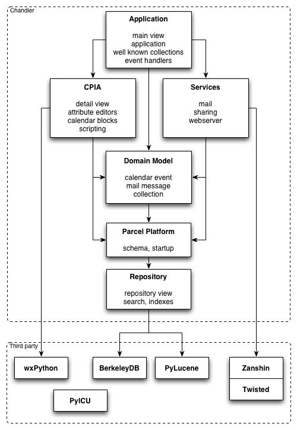
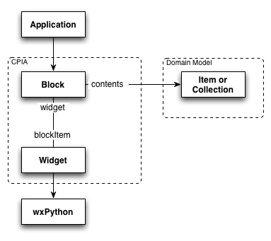
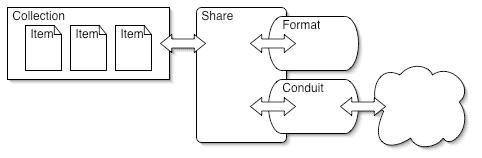
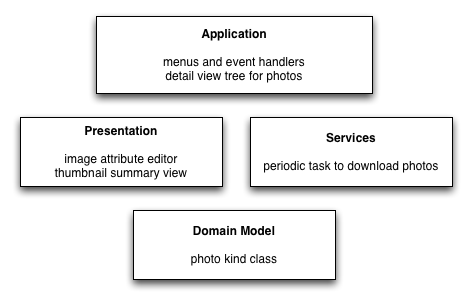

This document gives a brief overview of Chandler's architecture. We'll describe Chandler's layers, introduce Chandler-specific terminology, and give high level overviews of important aspects of the architecture.
Chandler is a work in progress; we are still working out both bugs in the code that don't conform to the architecture, as well as design issues with the architecture itself. This document describes Chandler as of the 0.6 release.
Data Driven ArchitectureBefore we start describing Chandler's layers, we need to introduce some concepts and terminology: Items, Kinds, Attributes, Collections, the Repository and Parcels. These concepts are a consequence of Chandler's data driven architecture, and pervade the system.
The fundamental unit in Chandler is an Item. An Item is a Python object that persists to Chandler's Repository. Each Item object belongs to a Python class. The class that defines an Item is known as its Kind, and has some additional features beyond a regular Python class. In particular, a Kind class describes the Attributes of its items, and persists this information to the Repository.
As an example, the user may create an event on her calendar: "Lunch with Mitch at 12pm". The client code that creates a new instance of a calendar event uses the constructor of the CalendarEvent Python class. The event instance will be stored in the Repository as an Item. The Item's Kind is CalendarEvent, and thus has the Attributes startTime and summary. The Item object's summary attribute will have a value of "Lunch with Mitch", and startTime will have a value of "12pm".
Much work in Chandler is done by creating Item objects and setting their attributes. Examples of Items include calendar events, email messages and tasks -- what we might think of as user data. UI objects like menus and views are also stored as Items, as are services like the background task that fetches email. Under the hood, the Kinds that describe these Items (e.g. MailMessage, Menu, PeriodicTask) are also persisted to the Repository as Items.
A Collectionis a set of Items, and is itself an Item. A Collection can define its Items in several ways: by explicitly listing the items; by containing all Items of a given Kind; by filtering another Collection using a Python expression; or by combining two Collections with set operations. Collections play a key role in Chandler's architecture, discussed in more detail below in Collections and Notifications.
In Chandler, Item objects and Kind classes are defined in Parcels. Parcels are a persistent representation of Python modules. These Python modules are introspected at startup so that Item and Kind data can be loaded into the Repository. Most Chandler code lives in Parcels. The few exceptions to this are the subsystems needed to bootstrap the system -- the repository itself, wxPython related startup code, and some services used by the repository (e.g. internationalization code).
When we say that Chandler has a data driven architecture, we mean that the application is described by Item objects that are stored in the repository. The application can be customized and extended quite a bit just by changing this data. Similarly, some customizations and extensions can be shared by sharing data (someday, not in 0.6). Another aspect of this architecture is that when an Item of a particular Kind is displayed in the user interface, the application will automatically pull up the appropriate code to view or manipulate the Item, based on its Kind.
We will now look at each of the layers that make up the Chandler architecture.
Generally, each layer or component is able to directly access the APIs of the layers below it. The lower level layers communicate to the layers above via a system of notifications. The lower level layers should have no specific knowledge of the layers above, and the higher level layers should know only the APIs of the layers below.
Chandler uses a variant of a Model -View - Controller architecture. Like many applications built on GUI frameworks, Chandler tends to mix the View and Controller code in one layer. We expect to reexamine this choice in the 0.7 time frame -- this document will focus on the code as it exists in the 0.6 release.
At the top of the diagram, the application layer is responsible for pulling all of the pieces together to present the interface to the user. It has the role of a Controller in terms of an MVC architecture.
The application layer handles the startup of Chandler. It contains the main "application" class that is primarily responsible for initializing Chandler components, as well as creating the MainView object that describes the layout of the application.
The Chandler application is built on wxPython, a cross platform GUI toolkit. wxPython is a Python wrapper on top of wxWidgets. wxWidgets provides a uniform C++ API on top of native toolkits: GTK, Win32 and OSX (Carbon).
The launching point for a wxPython application is a singleton subclass of wxApp. This subclass drives most of the startup activities by defining an OnInit method that gets called by wxPython at startup. In Chandler, OnInit looks for any new Parcels, loading them into the Repository. It also kicks off Twisted, which manages the networking services. (See Services and Threading Model).
The MainView object gets populated with UI Item objects defined in lower layers: what the menus are, where the sidebar goes, how much space the detail view takes, etc. It also creates well known Collection objects (e.g. "Trash", "All my Items"). It defines event handlers for application-wide events (e.g. "Quit", "New Collection").
Chandler's Presentation layer is handled by the Chandler Presentation and Interaction Architecture (CPIA). CPIA blends the role of View and Controller in an MVC architecture. CPIA is a Chandler specific framework, so it has API knowledge of the Repository, Items, Collections, and Chandler's Domain Model.
CPIA's role is to provide building blocks for Chandler's user interface, including some generic building blocks (e.g. Menus, Status Bar) as well as more Chandler specific building blocks (e.g. Sidebar, Calendar View, Detail View). Because we think of them as building blocks, the core unit in CPIA is called a Block.
Before we get into details about Blocks, we'll introduce some Chandler terminology by discussing the basic elements of Chandler's user interface that Blocks need to support:
Chandler has a familiar three pane view. The Sidebar contains a list of Collections (e.g. "Home", "Work"), and one of them is selected. The Summary View displays the Items in the selected Collection, and one Item is selected. The Detail View displays the selected Item. The Application Bar allows the user to select an application area (All, Calendar, Event, Task). This selection is used to filter what Kinds of Items are displayed and what type of Summary View is used. If "Calendar" is selected in the Application Bar, for example, collections of Calendar Events can be seen in a Calendar Summary View. If "All" is selected in the Application Bar, collections are seen in a more general Table Summary View. The application also has other common elements: Menus, a Toolbar, and a Status Bar. The Sidebar, Calendar Summary View, Table Summary View, Detail View, Application Bar, Menus, Toolbar, and Status Bar are all Blocks.
The typical function of a Block object is to display an Item or Collection to the user. A Block also takes input from the user and writes changes to the Item back to the Repository. Block objects can contain other Blocks, which you can think of as a tree of blocks. The Main View is the complete tree of Blocks that describes the layout of Chandler. The Detail View is another example of a tree of Blocks -- the selected Item's attributes are displayed using Blocks contained by the Detail View. The appropriate Detail View tree of Blocks gets hooked into the Main View, depending on the Kind of Item selected.
Terminology note: We sometimes use "Block" and "View" interchangeably. "View" comes from MVC, and "Block" is our Chandler-specific term. Yes, this can be confusing, especially given that "View" is also a common database term and we use "Repository View" as the name for a connection to the Repository.
The presentation layer defines Block classes. The application layer creates Block objects, and populates them with data to create the application specifics. Block objects are Items, so they persist to the repository; Chandler stores information about the user interface in the Repository. (Block classes also persist to the Repository as Kinds. The hope is that storing this kind of data in the Repository will someday enable us to build a cool UI builder, but that is a future project).
A Block knows about its contents, the user data displayed in the Block. The contents Attribute is usually an Item or Collection in the domain model (e.g. "All my items" collection, or a "Lunch with Mitch" calendar event). The Block delegates the work of display and user-interaction to a delegate object, called a Widget. The Block hands the Item or Collection to the Widget to do the display.
Block objects store information about the UI element they represent. Blocks, like all Items, persist to the Repository. A calendar Block object, for example, might know about the collection of items displayed, if the calendar is in "day" or "week" mode, etc. The actual implementation of the presentation is handled by the delegate Widget class, a subclass of a wxPython class. (Widgets are wxPython objects, they are not Items and they do not persist to the Repository).
Another key concept in CPIA is that of an Attribute Editor. Attribute editors are Python classes that handle the editing and rendering of one Attribute of one Item. Attribute editors are used by the DetailView or the SummaryTableView to render and edit a selected Item's attributes. For example, if a CalendarEvent is selected in the DetailView, a date-time attribute editor handles the editing and rendering of the startTime, and a text attribute editor handles the editing and rendering of the summary. Attribute editors make use of wxPython widgets to help out with the rendering and editing.
We've also been experimenting with the ability to script the application, which we call CPIA Script. In 0.6 we've been focused on using scripting to automate functional tests, but we hope to extend it to allow adventurous users to customize their environment with scripts and potentially share scripts. Yes, we realize that there are security implications, and hope to tackle that issue in 0.7.
Key decision: CPIA is not meant to be a general cross platform application building framework (such as XUL or wxWidgets). We're not trying to boil the ocean here. Chandler specific concepts like Items, Collections, Sidebar, Summary View and Detail View and their relationship to each other are embedded in the CPIA framework. OSAF doesn't intend to use CPIA for any purpose other than building the Chandler user-interface and allowing extensions to the Chandler user-interface. See Extension Parcels below for more information about extending Chandler.
The services layer allows Chandler to talk to the outside world. Currently this includes sharing (via WebDAV and CalDAV), email (IMAP, POP and SMTP), and running Chandler as a local webserver.
Chandler allows users to share Collections by publishing them to a server. Similarly, a Chandler user can subscribe to other users' Collections. Even in 0.6, Chandler supports both read-only and read-write access to these shared Collections. Import and export of calendar data is also supported.
Sharing functionality is implemented with a flexible framework:
To share a Collection, the framework creates three objects: a Share, a Format, and a Conduit. The Share object keeps track of the Collection being shared, filtering some Items before sharing. The Format object handles the serialization and deserialization of Items. There are currently two Format implementations: iCalendar (the standard used by CalDAV), and a Chandler specific XML format called CloudXML. The Conduit object is responsible for moving serialized representations in and out of Chandler. Current Conduit implementations include a FileSystem conduit (supporting import/export), a WebDAV conduit, a CalDAV conduit, and a simple HTTP conduit. More information about sharing, including the 0.6 spec, can be found at the sharing project page. The sharing framework can be extended to add new Conduits and Formats; we have a tutorial on how to extend sharing.
Chandler's sharing code makes use of a library called Zanshin, which supports collaboration over HTTP, WebDAV and CalDAV. Zanshin is an OSAF project with no dependencies on the rest of Chandler.
Zanshin and Chandler use Twisted for networking support. Services like mail and sharing run in the Twisted Reactor. See Threading Model below for more information on how this works. More information on Twisted in Chandler can be found at the project page for Twisted in Chandler and in the documentation about startup and background tasks in Chandler.
The Twisted framework enabled us to add the experimental feature that Chandler can be run as a webserver. While we have no current plans to use this capability for 1.0 Chandler features, we'll continue to experiment with it as a mechanism to extend Chandler.
The domain model defines all of the domain specific classes that represent application content such as Calendar Events, Mail Messages, Tasks, etc. It plays the role of the Model in an MVC architecture. This means that the domain model has no knowledge of the layers above it, allowing it to be used effectively by different Views and Controllers.
The domain model layer primarily consists of Python class definitions for these domain specific Kinds: calendar events, mail messages, tasks and contacts. Each of these classes is a subclass of ContentItem. The ContentItem class is a base class for all Items that the user would typically think of as their personal data. This layer also includes the code for Collections and notifications to the layers above. See Collections and Notifications for more information.
As 0.6 is a calendar release, much of the domain model work went into recurrences and timezones. You can read about this in more detail:
Terminology note: We have called this layer the "content model" in the past, so you'll find that term in the code. We chose "Domain Model" for this document because that term is more consistently used for this type of layer in other projects. We're still wrestling with the terminology and hope to clarify this further in 0.7.
The parcel framework provides basic services for parcels; an API to create Item objects and Kind classes, access to the threading services of the Twisted framework, and hooks for parcels to run code at startup.
The schema module provides the API for Chandler's data model, including an API for creating Item objects and Kind classes. Kind classes are created by subclassing schema.Item. Attributes are added to Kinds by defining attribute descriptors in the Python class, which are much like Python property definitions. Item objects can be created by calling the class constructors. The schema module also provides an API for updating or creating well known Item objects.
Chandler's data model has some interesting features, including bidirectional references between Items, and a mechanism for extending existing Kinds called annotations. The Parcel Developer's Guide to the Schema API explains these features in more detail, and provides an excellent tour through the schema API.
Parcels are both a mechanism for persisting Item objects and Kind classes to the Repository at startup, as well as a packaging mechanism for components in Chandler. For example, extensions to Chandler are packaged up as Parcels. We created Parcels before the existence of Python Eggs. In future releases we plan to replace Parcels with Eggs as a unit of component packaging.
The startup module provides hooks for running code at application startup. It provides classes that help run code in a separate thread, classes that run in the Twisted reactor (TwistedTask), and classes that run at periodic intervals in the Twisted reactor (PeriodicTask). More about the threading model below. You can also read documenation about the startup module.
The Repository is the persistent store for Chandler's data driven architecture. It implements the core code for Items and sets of Items (the basis of Collections), as well as notifications. It also supports full text search, sorting and indexing of sets of Items.
The Repository is essentially a Python object cache sitting on top of BerkeleyDB. It uses Lucene as the full text search engine. PyLucene is an OSAF project to make Lucene available to Python applications. For more information on the creative acrobatics used to get this to work, look at the PyLucene README.
Client code accesses the Repository through a RepositoryView object, which is a connection to the Repository. Client code creates, retrieves and updates Items in the repository view, which has an object cache local to the view. The client code can then commit the modified Items back to the core Repository, or refresh changes from the core Repository back into the view. The client code can also roll back changes. The transactional model is similar to that of CVS or Subversion. No locking is required, changes are either successfully merged or result in a conflict error during commit or refresh. The hope is that conflicts will be rare if we write the merging code well, and that the application will be able to present certain conflicts to the user and let the user make decisions about how to resolve them. (We have no such user interface in 0.6, we resolve conflicts at higher layers without involving the user).
As the lowest layer on the Chandler stack, the Repository has no
knowledge of the layers above it. The Repository communicates with the
layers above it by providing mechanisms for tracking changes in the
Repository.
The Repository provides various mechanisms for tracking changes to a given thread's Repository View, and a different mechanism for tracking changes in other Repository Views. Monitors and watchers allow client code to track changes to Attributes (monitors track all instances of one type of Attribute; watchers track one instance of a particular Attribute). The Repository View also provides a method that allows client code to poll for all recent changes in a RepositoryView. To get notifications about changes that occur in other Repository Views, clients can register a callback that gets invoked when the Repository View refreshes changes from the core Repository. The callback will be given a list of all changes that happened in other Repository Views.
For the most part, the application, presentation, and services layers do not need to interact with these mechanisms directly. Collections use these mechanisms to track changes, and provide a simpler API to the layers above for noticing changes. Collections and Notifications are discussed below.
The Repository contains the core implementations for Items, Kinds, and Attributes. Layers above the repository use the schema API instead of using the Repository's API directly (with some exceptions, like the RepositoryView).
Developers can extend Chandler by writing their own parcels. These extension parcels look similar to Chandler core parcels -- definitions of Item objects and Kind classes that belong in any of the four extensible layers: Application, Presentation, Services or Domain Model.
An extension that integrates Flickr photo data into Chandler might create Items and classes in all four layers.
An extension parcel might separate its code into Python modules based on these layers, or might include them all in one module if the parcel is small enough -- it is up to the parcel developer.
The parcel framework will introspect the extension parcel and commit the Items and Kinds to the Repository. The application will discover the Items and Kinds, inserting the menus into the Menu Bar and launching PeriodicTasks. When a Photo item is viewed, the application will use the appropriate Detail View Block object and image Attribute Editor to display the selected photo.
We have a few examples of extension parcels (including a Flickr parcel). We don't yet have any examples of custom summary views, or quite have the infrastructure to support this well in 0.6. We hope to support a wider array of extension points in future releases. We have several other problems to solve as well, including dependencies between parcels and digitally signed parcels. As mentioned above, we plan on using PythonEggs to address some of these problems in a more standard Pythonic way.
We have a detailed tutorial explaining the feeds parcel (a simple RSS reader). It should be noted again that most of Chandler is written as Parcels, so understanding how to extend Chandler is a good path to understanding Chandler's internals.
In Chandler, the Repository is the primary means that threads use to communicate with each other. A thread using the Repository has its own RepositoryView, which is an independent connection to the Repository.
The UI has its own thread (wxPython, like most GUI frameworks, runs in a single thread.) We're currently using the Twisted Reactor to schedule work that needs to happen outside the UI thread. The Reactor runs in a separate thread, and is used to schedule work: TwistedTasks or PeriodicTasks. TwistedTasks and PeriodicTasks are Items that persist in the Repository. Each TwistedTask or PeriodicTask has its own RepositoryView, as does the main wxPython UI thread.
To follow an example, the PeriodicTask that fetches email creates new email Items in its RepositoryView. After it creates the items, it calls commit() on the RepositoryView, which pushes the Items to the Repository. The UI thread calls refresh() on its RepositoryView during its OnIdle cycle, picking up the new changes. As the new changes are picked up, the appropriate Widgets are dirtied so that they will repaint themselves in the next Paint cycle.
Collections are a core element of Chandler's architecture. Collections are the primary mechanism for the application to access Items from the Repository. Collections are also the primary mechanism for distributing change notifications from the Repository to the layers above.
We have two kinds of Collections: "basis collections" and "virtual collections". List Collection and Kind Collection are both basis collections. A List Collection is an explicit list of Items. A Kind Collection automatically tracks all Items of a particular Kind, even when Items are created or change Kinds. Virtual collections are created by combining basis collections and other virtual collections. There are four virtual collections: Union Collection, Intersection Collection, Difference Collection and Filter Collection. Union, Intersection and Difference collections combine two collections with the obvious operation. Filter Collections start with another collection, and then remove Items according to some condition. The condition is a piece of Python code that evaluates to True or False.
The application maintains Collections of Content Items (events, tasks, mail messages, etc) to display in the Sidebar. The Sidebar uses some combination of the above elements to build "Home Calendar" or "All My Shared Items". The application also uses Collections to access other types of Items: all Attribute Editors, all active Periodic Tasks, etc.
Collections notice when Items in them have changed, or when Items leave or enter a Collection. Items in higher level layers can subscribe to Collection notifications, by registering themselves with the Collection and implementing a well known method (onCollectionEvent). Collections propagate the notifications to the list of subscribers, which use the information to update the display, fire off a reminder, etc.
To notice changes that happened in other threads, the application needs to refresh the Repository View on the GUI thread and look for changes. This happens regularly during the application's idle cycle. The main application object updates the GUI thread's Repository View, and then delivers the collected change notifications (from the GUI thread as well as from other threads) to subscribers. UI elements (Blocks) are common subscribers; they can update their display when they notice their content has changed.
Attribute Editors are an exception to this mechanism in 0.6 -- they subscribe directly to the Repository's attribute monitors. Every time an attribute is changed, the repository fires off a monitor to all subscribers (in this case the Attribute Editor). We plan on implementing notifications for a single Item in 0.7, using a mechanism similar to the one used by Collection notifications. Attribute Editors will use Item notifications instead of the lower level monitors.
Terminology note: We used to use the term "Item Collections" instead of "Collections", so you may see that term in specs and on the wiki.
For more detailed information on Collections and notifications, see the 0.6 Collections spec.
The 1.0 version of Chandler will contain infrastructure support for Internationalization (hereafter referred to as i18n). This includes the ability to localize the GUI strings (menus, tooltips, status, text labels); media types (images, icons, html); visual style information (fonts, colors); help (menus and tutorials); and example content (welcome message). It also includes locale specific support for date and time presentation, sorting and searching, as well as calendar and timezones. We've made significant progress towards this infrastructure in 0.6.
One key decision was to build on ICU, an open source i18n library available in C/C++. ICU provides services like datetime formatting and parsing, language sensitive collation and searching, etc. It also contains a large set of locale data. To make use of ICU in Chandler, we've started a project to wrap ICU in Python, called PyICU. PyICU is shipped as part of the Chandler distribution.
We're now ready to try out some test localizations; we hope to have localizations for French and/or Spanish in the next release. You can get more information about this from the i18n infrastructure plan; the i18n project page contains information about helping out with localizations can be found; there is also a parcel developer's guide to write i18n friendly code.
Our goal is to make Chandler as secure and safe to use as possible. But like the rest of Chandler, security work is still far from a finished product. Some things do work fairly well, some things we haven't checked, and some things we haven't started work on yet.
Chandler should be reasonably secure on a single user system, or when each user has a separate installation on a multiuser system. We haven't spent any time considering other cases yet.
Chandler is facing the outside world mainly through the sharing and email interfaces, and also some example parcels like Feeds (RSS reader), Flickr and Amazon wish list. The email feature leverages Twisted for most of the functionality and is expected to be reasonably secure. Although sharing also uses Twisted, there is more Chandler-specific code that has undergone less scrutiny. Most of the other parcels mentioned also build on some 3rd party module which is used in other projects as well, thereby reducing the likelihood that there are security issues. All of the cases (besides email) face same kind of issues as web browsers, and we have tried to avoid at least some of the common issues. These areas still need further security audits.
Chandler has pretty good SSL and TLS support. Email and sharing can use SSL, and for the Cosmo sharing server SSL is enabled by default. The underlying operations are provided by OpenSSL, through the M2Crypto wrapper.
It is possible to import certificates from the file system into the
certificate
store. Management of the certificate store is through a very
primitive UI available from the Test menu. Chandler ships with the same
root certificates
as Firefox.
Extensions to Chandler (both CPIA scripts and parcels) do not
run in any kind of protected sandbox. It is the user's
responsibility to decide if they trust the extension authors. Scripts
can be shared, but when a script is subscribed to it will be disabled
by default to prevent accidentally running new scripts.